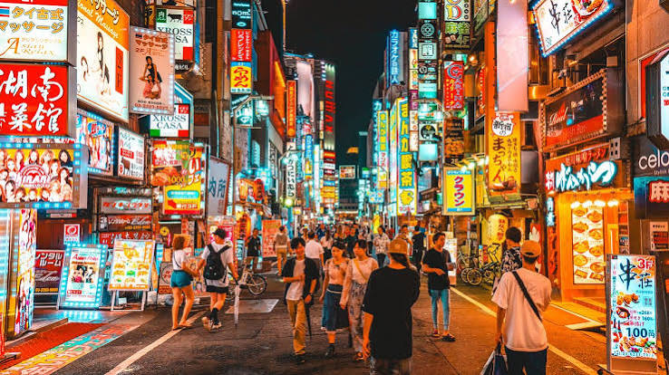
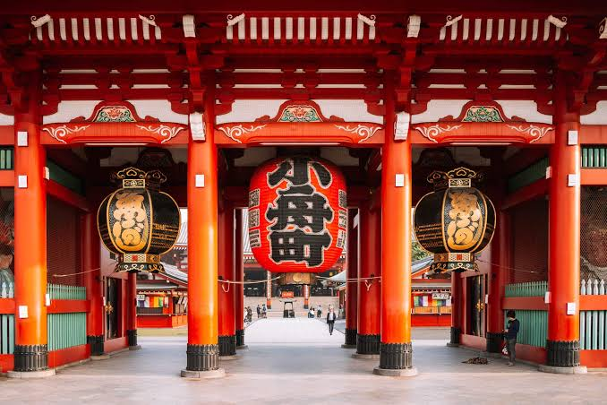

A Visual Journey Through Japan
Quiet temples, electric streets, and little moments in between. Discover a different side of Tokyo.
01 / Neighborhoods

Beyond the crowded stations and famous landmarks, Tokyo is full of peaceful corners. Small cafés, traditional shops, and narrow streets invite visitors to take their time.
Spend an afternoon walking without a strict plan. Notice the details: wooden doors, warm lanterns, tiny gardens, and the everyday life happening all around you.
Sometimes the most memorable places are the ones you never planned to visit.
02 / Photo Journal
Move your mouse over each photograph to reveal the story behind the image.

* Hover over a photograph to view field notes.
03 / Travel Planner
Plan your mornings, afternoons, and evenings with this simple three-day itinerary[cite: 1].
| Day | Morning | Afternoon | Evening |
|---|---|---|---|
| Day 1 | Asakusa Temple | Ueno Park | Shibuya |
| Day 2 | Meiji Shrine | Harajuku | Shinjuku |
| Day 3 | Tokyo DisneySea | Odaiba | |
A sample budget for transportation and meals in Tokyo[cite: 1].
| Category | Item | Estimated Cost |
|---|---|---|
| Transportation | Metro | ¥1,000 |
| Train | ¥1,500 | |
| Food | Lunch | ¥1,200 |
| Dinner | ¥2,000 |